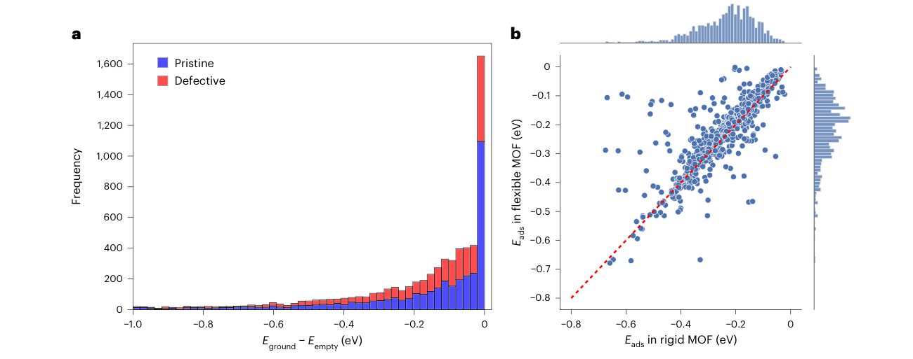
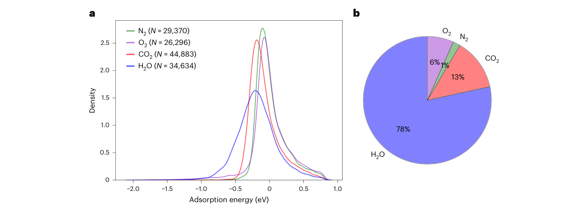
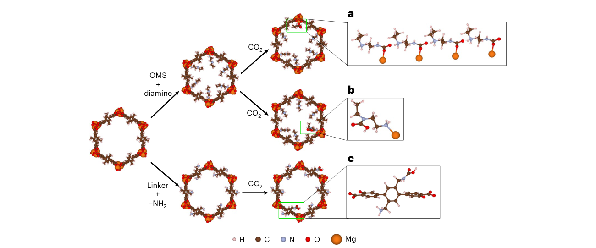
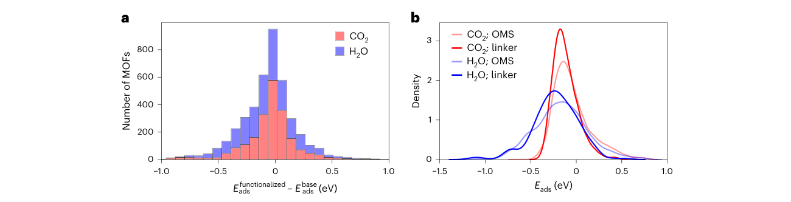

ODAC25：把框架形变、胺功能化和混合气体接入 MOF 吸附机器学习势
论文原文 ↗原文：Anuroop Sriram、Logan M. Brabson、Xiaohan Yu 等，An open dataset of gas adsorption in deformable metal–organic frameworks for direct air capture，Nature Chemical Engineering，2026 年 10 月 27 日。DOI：10.1038/s44286-026-00445-5。
从空气中捕集 CO₂，难点是让材料在低浓度 CO₂ 和水、氮、氧共同存在时仍能有效吸附，并且便于再生。金属有机框架（MOF）由金属节点与有机连接体组成，孔道及其化学环境可以改变，适合开展大规模候选筛选。但要让计算筛选可信，既要描述气体与孔壁的作用，也要描述吸附发生时框架本身怎样变形。
ODAC25 的目标是给这类问题提供足够丰富、物理定义一致的训练数据及可用势模型。它将近 6,000 万个 DFT 单点计算、约 15,000 个 MOF 汇入同一资源，覆盖 CO₂、H₂O、N₂、O₂，并增加胺功能化结构、生成式模型提出的框架以及偏离局部能量最低点的吸附构型。研究最终把模型接到低压吸附性质计算，检验这批数据能否改善实际筛选能力。
为什么“空框架的能量”会改变吸附结论
吸附能通常按下面的差值计算：
\[ E_{\mathrm{ads}}=E_{\mathrm{MOF+gas}}-E_{\mathrm{empty\ MOF}}-\sum E_{\mathrm{gas}}. \]
负值表示相对于空框架和孤立气体，组合状态的能量更低。这里容易忽略的是：一个先单独优化好的空框架，可能停在某个局部能量最低点；加入气体后，连接体转动或局部对称性被打破，框架就可能进入另一种构型。此时拿走气体再优化，得到的空框架可能比最初的空框架更稳定。
因此，气体吸附过程带来的能量变化同时涉及主客体相互作用和框架构型改变。若一直沿用原先较高能量的空框架作参考，吸附就可能显得过强。
作者对每条收敛的“MOF＋气体”弛豫结果，都移除气体，再次优化空框架原子位置；对同一 MOF，在收集到的这些空框架构型中选最低能量者作参考。这一流程保持晶胞参数固定，处理的是原子位置变化及局部形变。

图1｜a 比较重新搜索到的低能空框架与原空框架之间的能量差；b 比较刚性与可变形 MOF 的吸附能，偏离虚线说明形变改变了吸附能。
改用重新优化的参考后，各数据划分中的吸附能中位数都向较弱吸附方向移动超过 0.1 eV。作者另取 976 个构型直接比较刚性和可变形处理，发现 15.8% 的构型相差超过 0.05 eV，5.9% 相差超过 0.1 eV。H₂O 在 COJHIT 中吸附就是一个具体例子：连接体旋转伴随 0.337 eV 的吸附能差异。
这也解释了为什么数据集更新需要重新定义部分标签，而不只是向旧数据里追加更多结构。
怎样扩展到真实空气和可改造的吸附位点
四种气体分别提供什么信息
早期 ODAC23 主要包含 CO₂ 与 H₂O。ODAC25 加入 N₂、O₂：先用经典力场和蒙特卡洛方法寻找多样的初始放置，再用 PBE＋D3 的 DFT 计算优化气体和框架原子。新增的 N₂、O₂ 弛豫轨迹接近 5.6 万条，涉及约 6,400 个原始或含缺陷的 MOF。

图2｜a 展示四种气体的吸附能分布；b 按各 MOF 已采样位点中最强吸附的气体分类，水占最大比例。
图中的多数框架对水结合更强，说明只找到能吸附 CO₂ 的位点，还不足以决定湿空气中的材料表现。研究也找到部分对 N₂ 有较强结合的金属位点，显示这类数据需要覆盖超出通用弱相互作用模型的化学环境。
为使计算标签更一致，作者还检查了倒空间采样。原有统一使用 Γ 点的设置，在小晶胞上可能产生系统能量误差。团队对轨迹初、末构型补做更密的 k 点计算，用两端能量修正的平均值校正整条轨迹，将总能量收敛误差降到约 0.01 eV；相对于逐帧重算，额外成本低于 1%。
把胺接到孔壁上，并显式生成可能的反应构型
胺可以增强 CO₂ 捕集。作者采用两条结构改造路线：在有机连接体上加入胺基；或者把二胺的一端接在开放金属位点上，让另一端朝向孔内。开放金属位点指金属配位环境中可与外来分子接触、配位的位置。
程序先识别连接体与开放金属位点，按不同接枝浓度建立结构，调整初始取向以避免原子重叠，再进行 DFT 优化。由此得到 7,163 个不同的优化后胺功能化 MOF；后续吸附计算继续筛选能够容纳气体分子的孔道。

图3｜以 IRMOF-74-III 为例，上方是开放金属位点接枝二胺，下方是连接体加胺；a—c 展示与 CO₂ 结合后的不同化学构型。
仅把 CO₂ 随机放入孔中，几何优化未必能越过成键反应的能垒。因此作者还从已知捕集化学出发，直接构造接近反应产物的初始状态：例如 CO₂ 插入金属—胺键形成铵盐—氨基甲酸盐结构，或在胺基上形成氨基甲酸。随后加入零个、一个或两个水分子，继续进行 DFT 优化，使训练集同时包含物理吸附和相关的成键环境。

图4｜a 比较功能化与原框架的最有利吸附能差；b 比较连接体加胺和开放金属位点接枝二胺的吸附能分布。
这批采样中，功能化总体同时增强 CO₂ 和 H₂O 吸附。图4的作用是说明新增数据覆盖了怎样的化学变化；具体吸附能由接枝方式、框架构型以及气体落在哪个位点共同决定。
用非最低能构型训练模型，使它能处理模拟中的中间状态
原子模拟会遇到气体移动、相互接近以及多分子共存的状态。作者因此从巨正则蒙特卡洛（GCMC）模拟中抽取中间构型，补充超过 270 万个 DFT 单点计算。GCMC 通过尝试插入、删除和移动气体分子来模拟给定温度和气体化学势下的吸附；抽取的中间状态保留较高能构型及不同负载量，为学习分子—框架、分子—分子作用提供数据。
另一条扩展来自生成式设计：自回归 Transformer 依次提出框架拓扑、金属簇和连接体，程序用 Pormake 将其组装成原子结构，经过力场优化和几何过滤，再按孔隙、表面积及化学特征等选取互相差异较大的候选。最终有 460 个生成框架进入数据集，扩展了实验结构库以外的几何和化学空间。
从训练势模型到预测吸附性质
作者以总 DFT 能量和原子力训练 eSEN 等模型，利用能量梯度计算力，使最终模型的力满足能量守恒。训练目标由能量误差和力误差共同组成。与 ODAC23 直接学习吸附能的方案不同，学习总能量以后，同一个模型可以分别计算“框架＋气体”和“空框架”，再组合出吸附能，也能进一步分解主客体作用与框架形变的贡献。
在过滤后 ODAC25 测试集的结构—能量—力任务中，主要比较为：
| 模型与训练数据 | 吸附能 MAE（eV） | 原子力 MAE（eV/Å） |
|---|---|---|
| EquiformerV2-Large，ODAC23 | 0.154 | 0.021 |
| UMA-Small 1.1，ODAC25 子集及其他数据 | 0.108 | 0.034 |
| eSEN，完整 ODAC25 | 0.078 | 0.024 |
| eSEN，过滤后 ODAC25 | 0.082 | 0.035 |
完整数据训练的 eSEN 把吸附能误差降至旧 ODAC23 模型的大约一半，同时保持较低的力误差。在另外一组 59 个 MOF 的形变吸附测试中，eSEN-Full 对总吸附能、主客体作用和形变能的预测，都优于该测试此前比较的模型，吸附能相关性的 R² 达到 0.743。
随后，作者用势模型计算 Henry 系数，把局部能量预测接到实际吸附性质上。Henry 系数是极低气体负载下吸附等温线的斜率，表示材料对稀薄气体的吸附倾向；两种气体的系数之比则表示低负载下的选择性。
这里采用 Widom 插入：在固定框架中，随机选择测试分子的位置和取向，用模型计算每次插入的相互作用能，再对玻尔兹曼因子 \(\exp[-E_{\mathrm{int}}/(k_BT)]\) 求平均。能量更有利的孔内区域权重更大，因此该计算考验模型对整个孔空间的描述，不能只靠几个最稳定吸附位点完成。
作者选取 UiO-66、HKUST-1 和 MOF-5 的实验低压等温线进行比较。将 Henry 系数转到与其对数成比例的能量表示后，CO₂ 的误差从 UFF 的 0.0299 eV 降到 UMA-Medium 的 0.0151 eV；N₂ 则从 UFF 的 0.0190 eV 降到 eSEN-Filtered 的 0.0080 eV。两种气体的最佳模型不同，与各模型实际接受的吸附训练数据有关。这一结果把“训练数据覆盖什么”与“模型最终能算什么性质”联系了起来。
这项工作新增了什么能力
ODAC25 把用于空气捕集的 MOF 势模型训练向更真实的化学空间推进了一步：四种空气组分、胺功能化和反应构型、多个气体分子的共存状态，以及吸附引起的框架变化，进入了统一的数据和建模流程。空框架重新优化解决了吸附参考态问题，总能量训练则使模型能够同时描述主客体作用与框架形变。
其研究价值还在于，模型通过 Henry 系数连接到了吸附筛选。对希望自行训练、微调或评估 MOF 机器学习势的人，数据集、模型权重和模拟接口可以直接作为研究起点。
- 数据与模型：facebook/ODAC25
- 项目与形变测试：ODAC25
- Widom 插入工具：Cusp-AI/widom
原始摘要完整中文翻译
从潮湿空气中进行直接空气捕集（DAC），要实现经济且可规模化的工艺，就需要借助原子尺度建模，在广阔的化学空间中搜索并识别有前景的吸附材料。机器学习已成为高效且准确预测材料性质的有力工具，但这些模型需要大量经过仔细整理的训练数据。在此，我们提出 Open DAC 2025（ODAC25）数据集，其中包含近 6,000 万个 DFT 单点计算，描述 CO₂、H₂O、N₂ 和 O₂ 在约 15,000 个金属有机框架（MOF）中的吸附。ODAC25 引入功能化 MOF、高能吸附质放置构型以及通过生成方法构建的框架，以尽可能拓展在该数据集上训练的模型的适用范围。ODAC25 提高了此前工作的 DFT 计算精度，并采用近期研究中有关吸附质诱导 MOF 柔性处理的工程认识。我们发布了在 ODAC25 上训练的先进机器学习原子间势，并通过 Henry 系数预测展示其用途。ODAC25 使面向直接空气捕集的 MOF 筛选达到此前无法实现的精细程度。